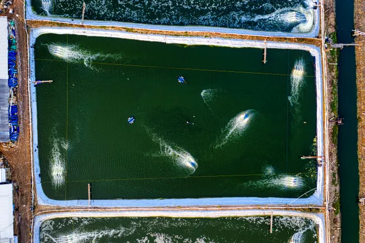
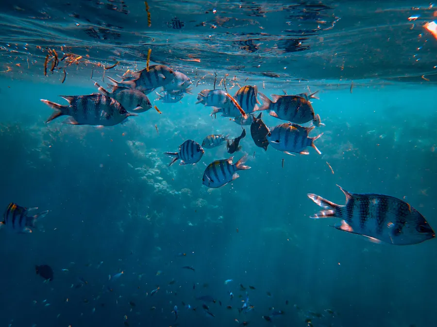
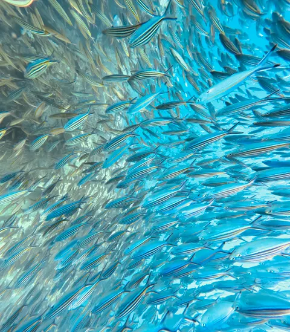

Robust sensor buoys, auto-feeders and cameras designed for working farms and abrasive conditions.

Solar-powered, six-parameter water probe with a two-year battery backup.

Appetite-responsive dispensers that cut overfeeding without extra labor.

Low-light camera pod for biomass estimation and stock health checks.

The dashboard from Section 6, in your pocket — alerts, trends, harvest logs.



Every device is sealed, field-serviceable and designed for the ordinary abuse of working water: salt, mud, heat, spray and long days between visits.
The kit arrives labeled by pen, with mounting hardware, a gateway map and app access already prepared for your farm team.
We mark sensor locations against pens, cages or ponds before hardware leaves our bench.
Buoys, cameras and feeders are mounted with your crew so maintenance is clear from day one.
Readings, alerts and team permissions are checked before the installer leaves the farm.